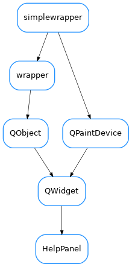

HelpPanel¶

-
class
HelpPanel(collection_file=None, parent=None)[source]¶ Bases:
PyQt5.QtWidgets.QWidgetSimple widget to display application help system. Usage:
from taurus.external.qt import Qt from taurus.qt.qtgui.help import HelpPanel app = Qt.QApplication([]) help_panel = HelpPanel() help_panel.setCollectionFile("help_file.qhc") help_panel.show() app.exec_()
-
collectionFile¶ This property holds the current collection file name
Access functions:
-